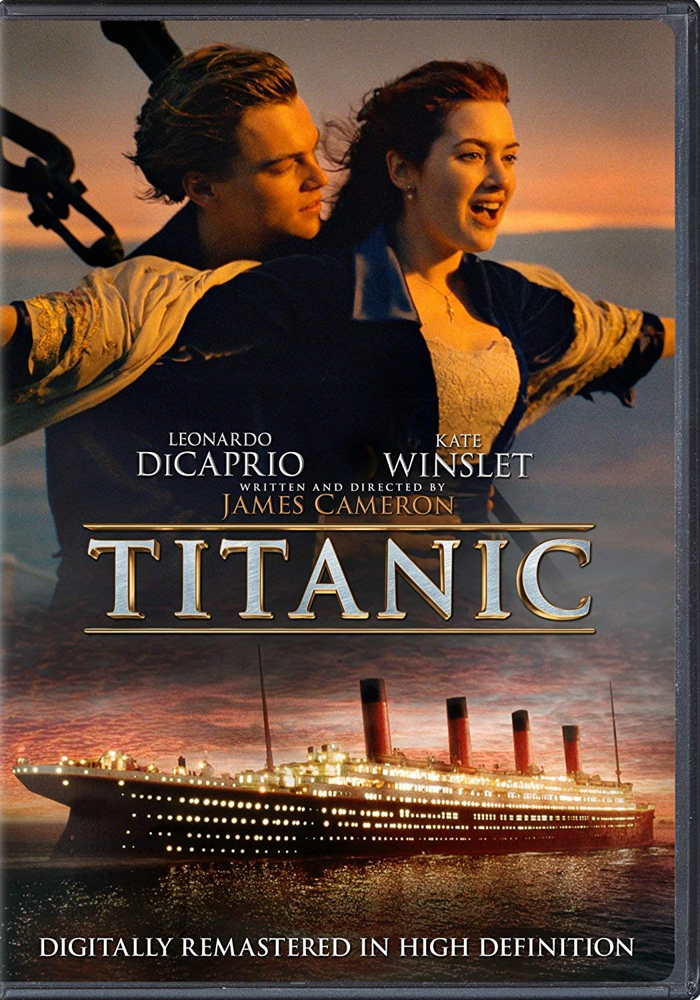

[FILME]
Titanic
1997 • 3h 14min • Romance/Drama
Jack e Rose se conhecem durante a viagem inaugural do Titanic e vivem uma história de amor enquanto o navio enfrenta uma tragédia.
Direção: James Cameron
Elenco: Leonardo DiCaprio, Kate Winslet, Billy Zane e Kathy Bates
Nossa crítica
Titanic é um filme de romance e drama que conta uma história de amor durante uma das maiores tragédias marítimas da história. A trama acompanha Jack e Rose, que se conhecem durante a viagem e acabam criando uma forte relação, mesmo vindo de realidades completamente diferentes. Leonardo DiCaprio e Kate Winslet fazem um ótimo trabalho como os protagonistas, mostrando bem os sentimentos e os conflitos dos personagens. A diferença entre as classes sociais também é bem explorada, principalmente na relação de Rose com sua família e com as pessoas ao seu redor. A direção de James Cameron é um dos grandes destaques do filme. As cenas do Titanic e do naufrágio são muito bem produzidas e ajudam a criar momentos de tensão e emoção. Além do romance, o filme também mostra temas como desigualdade social, liberdade, coragem e as escolhas que fazemos em momentos difíceis.
Veredito
Titanic é um filme emocionante, com uma história marcante, boas atuações e cenas que ficaram famosas no cinema. A relação entre Jack e Rose é o principal destaque e faz o filme continuar sendo uma boa escolha para quem gosta de romance e drama.